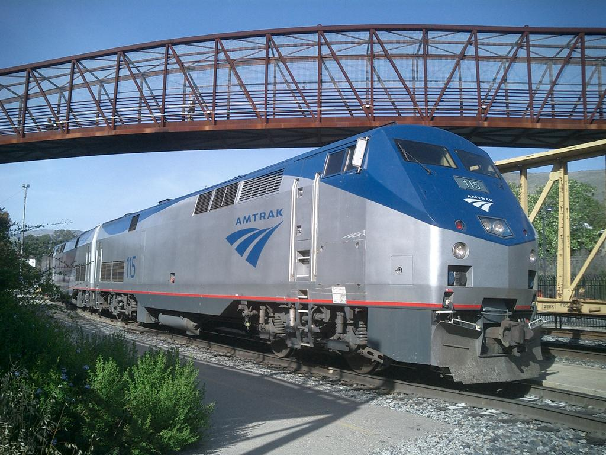

Download this project
The Problem
Amtrak has been shown to be a company that does a service to the country, but does not make a
profit. Executives at Amtrak have suggested that some of the rail lines, stations and/or trains
should be eliminated to allow the company to minimize its losses. A team of consultants has been
hired to analyze the rail services that are available in any region and decide where Amtrak needs
to concentrate its money and services to best meet the needs of its customers. As a team of
consultants you will need to make recommendations in your area of expertise as to what Amtrak should do.
Areas of Application
- Geometry:
- Algebra II:
- Linear Programming
- Matrix operations including: addition, multiplication, powers, row and
column sums
- Discrete Math:
- Graph Theory including: vertex-edge graphs, weighted graphs, shortest paths,
spanning trees (projects can be done withonly cursory understanding of these graphs)
- Computer Applications
Explanation of Alignment with Standards
Background Information
Background
- The name Amtrak is the blending of the words "American" and "Track". The railroad's official
name is the National Railroad Passenger Corporation.
- Amtrak began service on May 1, 1971 when Clocker No. 235 departed New York Penn Station at
12:05 a.m. bound for Philadelphia.
- In 1971, Amtrak announced a schedule of 184 trains, serving 314 destinations.
- When service began on May 1, 1971, Amtrak had 25 employees. Today, the company employs 22,000 people.
- Since the beginning, even-numbered trains have traveled north and east. Odd-numbered trains travel
south and west. Among the exceptions are Amtrak's Pacific Surfliners, which use the opposite numbering
system inherited from their former operator, the Santa Fe Railroad, and some Empire Corridor Trains.
Service
- Amtrak serves more than 500 stations in 46 states. Those not included are Alaska, Hawaii, South Dakota,
and Wyoming. Wyoming is served by Amtrak Thruway Motorcoaches.
- Amtrak operates over more than 22,000 route miles. It owns 730 route miles, about 3 percent of the
total nationwide, primarily between Boston and Washington, DC, and in Michigan. In other parts of the
country, Amtrak trains use tracks owned by freight railroads.
- On weekdays, Amtrak operates up to 265 trains per day, excluding commuter trains.
- Amtrak trains operate every minute of the entire year.
Ridership
- In fiscal year 2003, Amtrak served more than 24 million passengers, an all-time record. In fiscal year 2002, despite a national downturn in travel, Amtrak served 23.4 million passengers.
- Each day, approximately 66,000 passengers travel on Amtrak.
Materials Included
- Articles describing the background and source of the problem
- Suggestions on data gathering techniques and organization
- Student information and teacher guidelines
- Example of a possible network analysis
Download
| To Download: |
| Windows: right-click on the filename above and choose: "Save Target As..." |
| Mac/Apple: hold the CTRL key, click on the filename above, and choose: "Download to Disk..." |